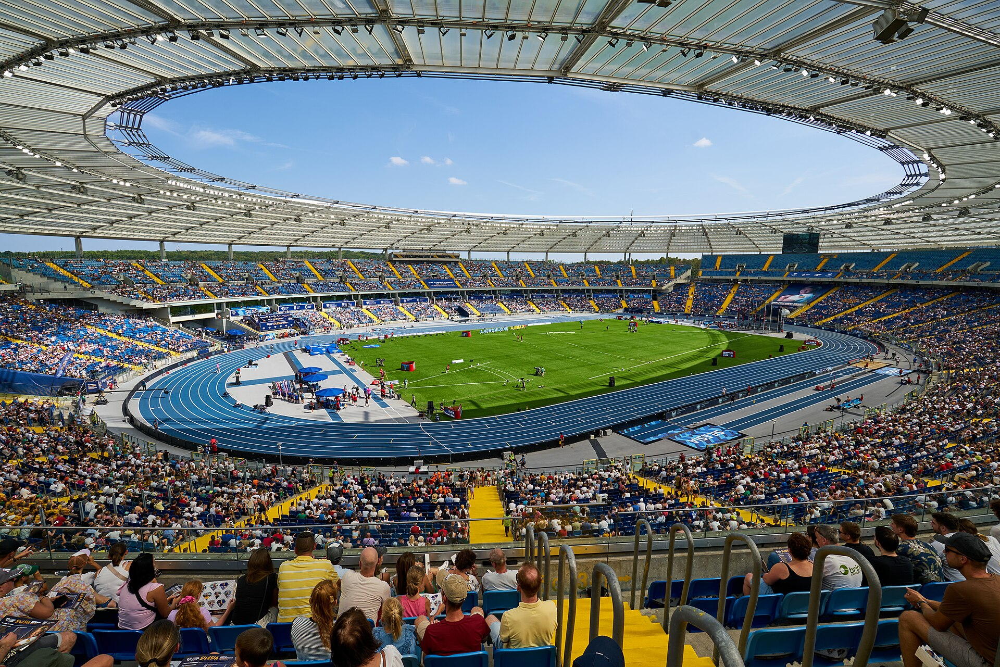

Disputado no Stadion Śląski, em Chorzów, na Polônia, o Kamila Skolimowska Memorial ocupa uma posição importante na reta final da temporada e combina três elementos que transformaram o encontro em uma das paradas mais fortes do circuito: grandes nomes, provas rápidas e um estádio que já recebeu marcas históricas.
Para o público brasileiro, o principal representante estará nos 400 metros com barreiras. Alison dos Santos tem participação prevista contra Karsten Warholm em mais um capítulo de uma rivalidade que marca a temporada de 2026. Os dois voltarão a se encontrar quatro dias depois, em Zurique, antes do final da temporada em Bruxelas.
Mas a Silésia vai muito além do duelo entre o brasileiro e o norueguês. Armand Duplantis retorna ao local em que já quebrou o recorde mundial do salto com vara, enquanto Yaroslava Mahuchikh, Marileidy Paulino, Soufiane El Bakkali, Oblique Seville e algumas das maiores estrelas dos 100 metros femininos também foram anunciados pela organização.
Alison dos Santos x Karsten Warholm
Os 400 metros com barreiras masculinos oferecem um dos confrontos mais aguardados da etapa, os dois atletas estão novamente colocados frente a frente depois de uma sequência de encontros durante a temporada.
Antes da Silésia, o brasileiro havia superado Warholm nos confrontos entre ambos realizados em Shanghai/Keqiao, Xiamen e Oslo. Os dois já garantiram classificação para a final da Diamond League em Bruxelas.
A presença de Alison reforça a importância da Silésia para o atletismo brasileiro. O paulista já conquistou dois títulos da Diamond League e foi campeão mundial dos 400 metros com barreiras em 2022. Seu recorde pessoal é de 46s29.
A temporada também dá continuidade ao caminho acompanhado pelo Corte dos Esportes nas etapas anteriores. O brasileiro já havia sido destaque na Diamond League de Estocolmo, em uma campanha que manteve o barreirista entre os principais nomes do circuito internacional.
Duplantis volta a um lugar especial da carreira
Outro nome inevitável quando se fala em Silésia é Armand “Mondo”. O sueco retorna ao encontro polonês pelo quinto ano consecutivo e carrega uma ligação especial com o estádio.
Foi justamente na Silésia, em 2024, que Duplantis superou 6,26 metros e estabeleceu naquele momento um novo recorde mundial do salto com vara. Desde então, o sueco continuou avançando a marca global e chegou à temporada de 2026 como pentacampeão consecutivo da Diamond League.
O salto com vara masculino aparece no programa oficial de domingo, embora nem todas as provas do cronograma da Silésia sejam disciplinas pontuáveis da Diamond League. A organização também incluiu competições adicionais no encontro, mantendo a característica de ampliar o espetáculo para além das provas que distribuem pontos para a classificação do circuito.
100 metros feminino tem nível mundial
Poucas provas da etapa chamam tanta atenção quanto os 100 metros feminino. A Diamond League anunciou um grupo com Julien Alfred, Melissa Jefferson-Wooden, Elaine Thompson-Herah, Shericka Jackson e Sha’Carri Richardson.
A jamaicana Thompson-Herah é a segunda mulher mais rápida da história da prova, com os 10s54 registrados em Eugene em 2021. Shericka Jackson também integra a lista, enquanto Richardson chega com o currículo de campeã mundial dos 100 metros em 2023. Alfred e Jefferson-Wooden completam um bloco de campeãs globais anunciado para a competição.
A polonesa Ewa Swoboda, um dos principais nomes locais, também estava entre as atletas anunciadas pela organização para enfrentar o forte grupo internacional.
No masculino, o campeão mundial Oblique Seville foi também confirmado. A organização anunciou Kenny Bednarek entre os nomes previstos para a prova.
A lista de estrelas
Yaroslava Mahuchikh é outra recordista mundial programada para competir. A ucraniana detém a melhor marca da história do salto em altura feminino, 2,10 metros, alcançada em Paris em 2024. A australiana Nicola Olyslagers também foi anunciada para a disputa na Silésia.
Nos 400 metros feminino, Marileidy Paulino aumenta ainda mais o nível técnico do encontro. A dominicana chegou à etapa polonesa depois de uma temporada com quatro vitórias no circuito até o anúncio feito pela Diamond League, incluindo marcas de encontro em Doha e Mônaco e um recorde da Diamond League em Paris.
Os 3.000 metros com obstáculos masculino terão Soufiane El Bakkali entre as principais referências. O marroquino havia registrado 7min57s25 em Rabat e acumulado vitórias também em Estocolmo e Doha durante a temporada.
O disco masculino contará com Roje Stona, enquanto os campeões olímpicos Ethan Katzberg e Camryn Rogers foram anunciados para as provas de lançamento do martelo, que fazem parte do programa ampliado do Memorial.
As provas programadas para domingo na Silésia
O programa oficial publicado para 23 de agosto reúne provas de velocidade, meio-fundo, fundo, barreiras, saltos e lançamentos.
Masculino:
- 100 metros
- 400 metros
- 1.500 metros
- 110 metros com barreiras
- 400 metros com barreiras
- 3.000 metros com obstáculos
- salto com vara
- arremesso de peso
- lançamento do disco
- lançamento do martelo
Feminino:
- 100 metros
- 400 metros
- 1.500 metros
- 5.000 metros
- 100 metros com barreiras
- salto em altura
- salto triplo
- lançamento do martelo
A programação do evento também inclui competições no sábado, 22 de agosto, em Katowice, entre elas o salto em altura masculino, salto em distância feminino e arremesso de peso feminino.
Por que a Silésia é uma etapa especial da Diamond League
O Kamila Skolimowska Memorial começou em 2009 como homenagem à campeã olímpica polonesa do lançamento do martelo. Desde 2018, o encontro é realizado no Silesian Stadium, e em 2022 passou a integrar oficialmente a Diamond League, tornando-se a primeira competição polonesa a fazer parte do principal circuito anual do atletismo.
O local rapidamente construiu reputação internacional. Em 2024, além do recorde mundial de Duplantis no salto com vara, Jakob Ingebrigtsen correu os 3.000 metros em 7min17s55, também quebrando o recorde mundial da distância.
Esse histórico ajuda a explicar por que a etapa ganhou espaço na reta decisiva do calendário. Em 2026, a Silésia é a 13ª parada da temporada, depois de Lausanne e antes de Zurique. A final será disputada em Bruxelas, nos dias 4 e 5 de setembro.
Como funciona a briga pela final da Diamond League
A temporada é organizada em 32 disciplinas. Nas etapas classificatórias, os oito primeiros colocados de cada prova recebem pontos: oito para o vencedor, sete para o segundo e assim sucessivamente até um ponto para o oitavo.
A quantidade de classificados para a final depende da modalidade. Nas provas de campo avançam os seis melhores; nas provas entre 100 e 800 metros, os oito melhores; nos 1.500 metros e nas corridas de longa distância, classificam-se os dez primeiros do ranking.
Por ocorrer a poucos dias de Zurique e a menos de duas semanas da decisão em Bruxelas, a Silésia funciona como ponto decisivo para atletas que ainda precisam consolidar vaga, melhorar posição ou simplesmente testar a forma antes da final.
Cronograma de domingo, no horário de Brasília:
- 9h — lançamento do martelo masculino e feminino
- 9h10 — arremesso de peso masculino
- 10h02 — salto em altura feminino
- 10h30 — salto triplo feminino
- 10h35 — salto com vara masculino
- 10h42 — 100 m masculino, bateria A
- 10h50 — 100 m masculino, bateria B
- 11h04 — 400 m com barreiras masculino, com Alison dos Santos e Matheus Lima
- 11h14 — 400 m feminino
- 11h22 — 3.000 m com obstáculos masculino
- 11h40 — 110 m com barreiras masculino
- 11h47 — 5.000 m feminino
- 11h50 — lançamento do disco masculino
- 12h11 — final dos 100 m masculino
- 12h19 — 1.500 m feminino
- 12h31 — 400 m masculino
- 12h40 — 1.500 m masculino
- 12h53 — 100 m feminino.
Transmissão ao vivo no Brasil: até a publicação desta matéria, não há confirmação de transmissão ao vivo da etapa na grade brasileira.
SporTV 2: a grade disponível confirma exibições da Diamond League da Silésia na segunda-feira, 24 de agosto, às 13h e às 15h.
A combinação de estrelas, recordistas mundiais e um novo duelo entre Alison dos Santos e Karsten Warholm coloca a Silésia entre os encontros mais atraentes da reta final de 2026. Mais do que uma etapa isolada, o Memorial consolidou-se como um dos cenários de referência do atletismo europeu e chega ao domingo com potencial para influenciar diretamente a corrida por vagas e posições na final da Diamond League.
A etapa da Silésia também chega poucos dias depois de um dos principais eventos continentais da temporada. Em Birmingham, o Europeu de Atletismo 2026 reuniu campeões e quebra de recordes, servindo como referência importante para medir o momento de vários atletas que agora seguem no circuito internacional rumo à reta decisiva da Diamond League.